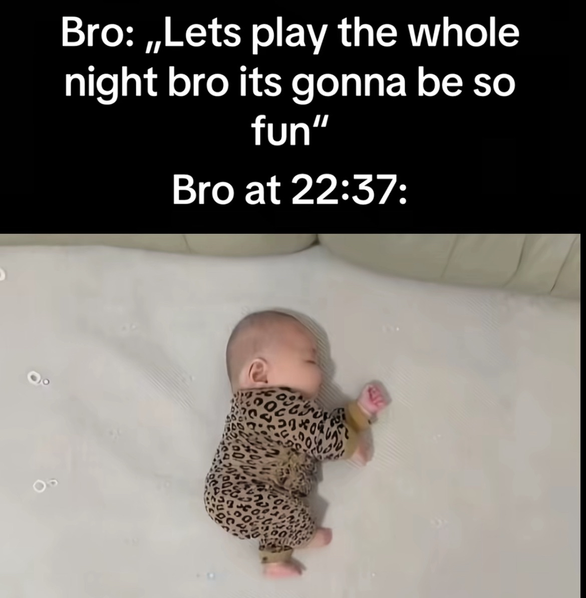
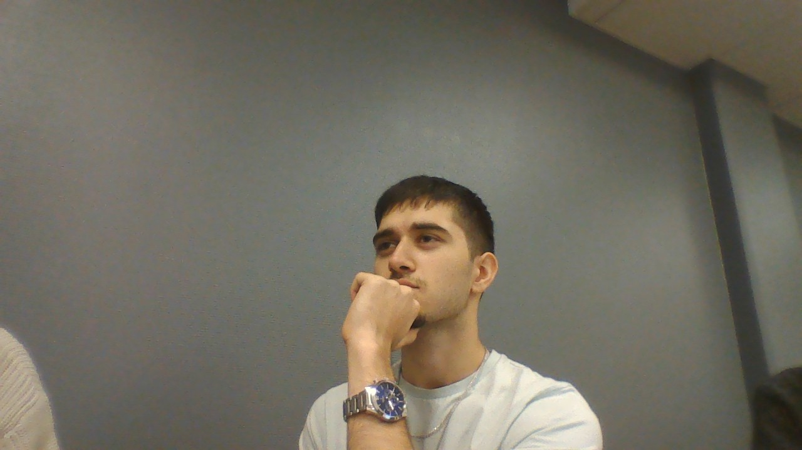

LOKAL LEGEND FÖRSVUNNEN
Den lokala kändisen vid namnet Olle har försvunnit spårlöst. Det var vid 12 tiden på en tisdag som han sågs senast sitta i lärarrummet. Vid eventuella fynd eller tips, vänligen kontakta oss.

Den lokala kändisen vid namnet Olle har försvunnit spårlöst. Det var vid 12 tiden på en tisdag som han sågs senast sitta i lärarrummet. Vid eventuella fynd eller tips, vänligen kontakta oss.

Den populära traditionen med ”Brunos läggdag” är nu ett minne blott. Efter flera års vana med en bestämd vilodag har beslut fattats om att ta bort den, något som väckt reaktioner både bland vänner och kollegor. Bruno, som länge haft fredagar som sin personliga ”läggdag” en dag då han fått lägga sig tidigt, vila upp sig och slippa ansvar har nu fått besked om att denna rutin inte längre ska gälla. ”Jag är lite chockad. Läggdagen har varit min chans att återhämta mig, nu vet jag inte hur jag ska få samma balans,” säger Bruno själv. Bakgrunden till förändringen ska enligt uppgifter vara ett nytt schema som inte längre tillåter den extra vilodagen. Arbetsledningen menar att beslutet är nödvändigt för att alla i gruppen ska få lika förutsättningar. Men alla håller inte med. Bland Brunos vänner finns de som tycker att läggdagen snarare borde spridas än avskaffas. ”Det var ju ett lysande koncept, fler borde få en egen läggdag istället för att ta bort Brunos,” säger en bekant. Diskussionen om läggdagens försvinnande har redan börjat sprida sig på sociala medier, där hashtaggen #RäddaLäggdagen fått fart. Framtiden får nu utvisa om Bruno lyckas återinföra sin uppskattade rutin eller om det här blir början på en ny, mer krävande vardag.
Flera experter på arbetsmiljö och återhämtning har också engagerat sig i debatten. De menar att fenomenet med en fast vilodag i veckan kan vara mer värdefullt än vad många tror. ”Att aktivt planera in tid för återhämtning är avgörande för både produktivitet och välmående. Kanske är Brunos läggdag inte bara en kuriositet, utan något vi borde se mer av i arbetslivet,” säger en stressforskare vid ett svenskt universitet. Samtidigt växer stödet för Bruno från oväntat håll. Ett lokalt kafé har erbjudit honom en ”läggdagsmeny” varje fredag, med lugnande te och extra mjuka stolar, för att symboliskt hålla traditionen vid liv. På nätet har dessutom förslag dykt upp om att starta en medborgarinitiativkampanj för att ”institutionalisera läggdagen” som ett samhällsfenomen. Om denna rörelse får fäste återstår att se, men klart är att en till synes liten rutin nu blivit en större fråga om balans, vila och rättvisa i vardagen.

Lilla fina fruängen, 11/9-2001 När allt verkade förlorat klev en person fram och förändrade utgången på ett ögonblick.Ramez Zariab, 28, har hyllats som en hjälte efter att ha ingripit i en dramatisk situation som kunde ha slutat i katastrof. Händelsen utspelade sig mitt under rusningstid i stadens centrum och har redan blivit samtalsämnet som ingen kan sluta prata om.